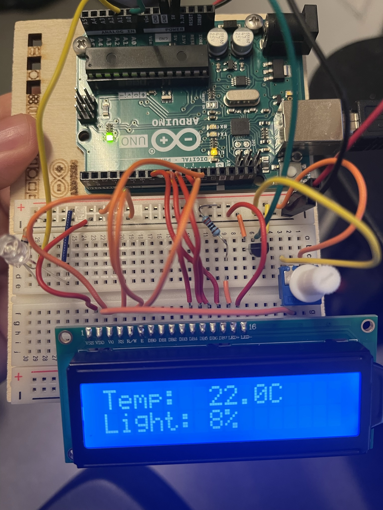

Arduino prosjekt med temperatur og lyssensor
Prosjektet mitt vil bygge videre på sluttprosjektet. Der jeg kommer til å bruke en temperatur sensor for å måle temperaturen i nærliggende område og en lys sensor for å måle hvor mye lys som kommer til. Siden jeg som sakt skal bruke en temperatur sensor og lys sensor ønsker jeg nå hvertfall å kunne vise dette uten å være koplett til en pc, og dette skal jeg gjøre ved hjelp av en LCD-skjerm. Alle delene i dette prosjektet er i fra Arduino starter kitet vi fikk utdelt ifra skolen.
Her er resultatet av prosjektet og hvordan koblingene er gjort.

I setup blir lcd-skjerm startet hvor vi forteller hvor mange koloner og rader skjermen har.
Slik at vi kan bruke setCursor til å fortelle hvor på LCD-skjerm teksten skal vises, altså hvor teksten begynner.
Ved bruk av lcd.setCursor(0,1), sier vi til LCD-skjerm at den skal begynne på kolone 0 og på rad 1.
Loop funksjonen er der vi henter inn verdiene fra sensorene og konvertere de slik at de kan vises på LCD-skjermen.
Brukte map() funksjonen som er innebyd i Arduino IDE for å konvertere verdiene til leselige
verdier som kan vises på en LCD-skjerm.
map(value, fromLow, fromHigh, toLow, toHigh)
Delay funksjonen er der for å gi sensorene tid til å hente inn verdiene og er satt til å være 0.5 sekunder(500ms).
Pin layout
Pins fra LCD- Pin 1 - Jord
- Pin 2 - 5V
- Pin 3 - Potensiometer
- Pin 4 - Arduino pin 12
- Pin 5 - Arduino pin 7
- Pin 6 - Arduino pin 11
- Pin 11 - Arduino pin 10
- Pin 12 - Arduino pin 9
- Pin 13 - Arduino pin 8
- Pin 14 - Arduino pin 7
- Pin 15 - 5V igjennom en 220 Ohm resistor
- Pin 16 - Jord
- Ben 1 - 5V
- Ben 2 - Jord
- Ben 3 - LCD pin 3
- Ben 1 - 5V
- Ben 2 - Arduino A0
- Ben 3 - Jord
- Langt ben -5V
- Kort ben - 10k Ohm resistor igjennom jord og en kobling til Arduino A1